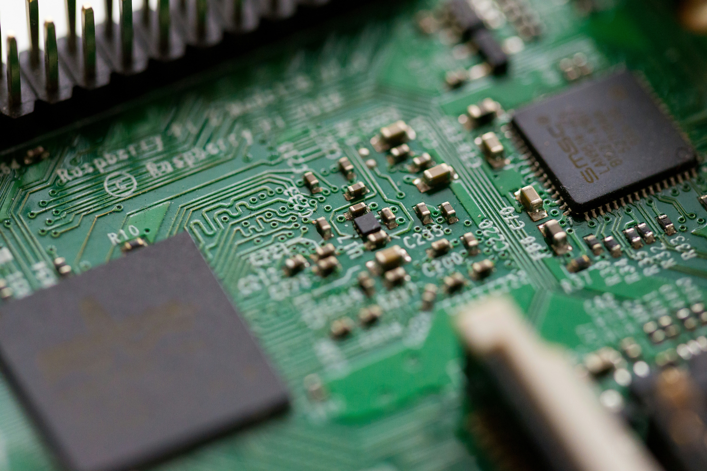

What is neuromorphic computing?
Neuromorphic computing is a technology that designs computer chips to work more like the human brain — using artificial neurons and synapses instead of traditional transistors and clock cycles. Rather than processing every instruction in a rigid sequence, neuromorphic chips process information in parallel, event-driven bursts. This makes them far more efficient for perception and pattern-recognition tasks than conventional processors.
How is it used today?
Companies like Intel (Loihi 2) and BrainChip (Akida) have already released commercial neuromorphic chips. Autonomous vehicles use neuromorphic vision processors to recognize objects in real time with far less power than a GPU. The technology is also being applied in cybersecurity threat detection, healthcare patient monitoring, aerospace systems, and any edge-AI device where battery life and processing speed are critical constraints.
Market size and growth
The neuromorphic computing market reached an estimated $8–9.5 billion in 2025 and is projected to grow to between $47–59 billion by 2033. Over $200 million in venture capital was invested in neuromorphic startups in 2025 alone, with Intel, IBM, Samsung, and Qualcomm all actively staking positions in the field.
How does this connect to Computer Engineering?
Designing neuromorphic hardware requires exactly the skills a Computer Engineering degree develops: chip architecture, digital logic, hardware-software co-design, and low-level systems programming. As AI becomes embedded in physical devices — cars, wearables, robots, medical implants — engineers who can design efficient, brain-inspired hardware will be among the most valuable in the industry. Neuromorphic computing sits directly at the intersection of hardware and AI, which is precisely where I want to build my career.
Why this technology interests me
Traditional processors are hitting fundamental limits — they require enormous amounts of power to perform the AI tasks that a human brain accomplishes using roughly 20 watts. Neuromorphic computing offers a path toward AI that is faster, more energy-efficient, and more adaptable to real-world environments. The idea of building hardware that takes its design cues from the most powerful computing system we know — the brain itself — is one of the most ambitious and exciting engineering challenges happening right now. I want to be part of it.